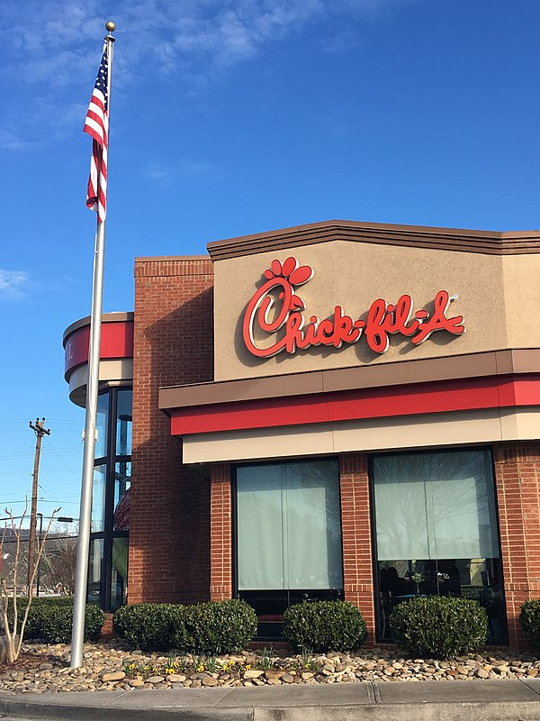

This is one of the most popular fast food resturants all over the world originally from the U.S.A.
The first time I actuallt heard of Chick-fil A was on YouTube vlog by LexiVee03 when she
when to two different restorants just to try out some cool chickens in her vicinity(Alabama, New York).
Recently, I downloaded some American accent audio from Tubidy because I LOVE TO MASTER THE AMERECAN ACCENT.
I love it soo much!!! then within the audio Chick-fil A was spoken of. I feel excited.